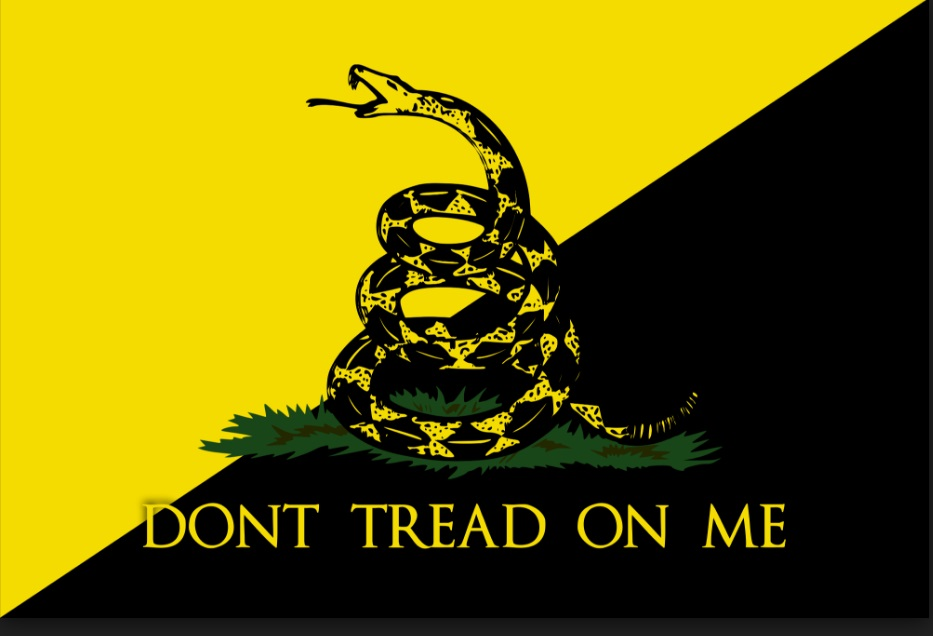
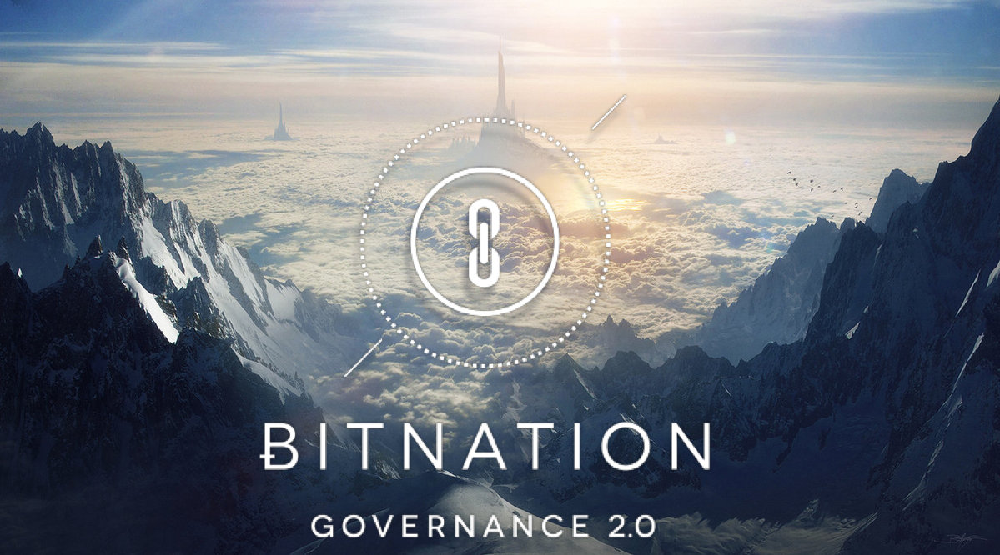

Imagem1 Imagem
|  |
|---|
Conhecimento avançado de sistemas de CRM
Premiado com Bolsa de Mestrado MsC Digital Currencies da University of Nicosia (atualmente matrícula
se encontra trancada)
Cargo Honorário de Embaixador da Bitnation para o Brasil
Tradutor Freelancer do site Holytransaction.com, e pago através de Bitcoins, com contrato registrado
em cartório da Blocchain
Coordenador Local dos Students For Liberty Brasil
Programação básica em HTML
Diploma Master Cultura Inglesa
Cultura Inglesa - RJ - outubro de 2008
Curso Information and Security British Schools - junho de 2009
Honorable Mention for the Historic Security Council at the 10th Edition of SIONU (Simulation of the
United Nations) 2011
SIONU - novembro de 2011
Bacharel em Relações Internacionais / Bachelor in International Relations Universidade Estácio de Sá,
Licença 001136 pela Secretaria de Registros de Diplomas agosto de 2015